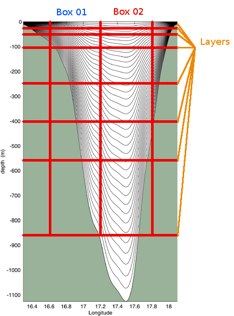
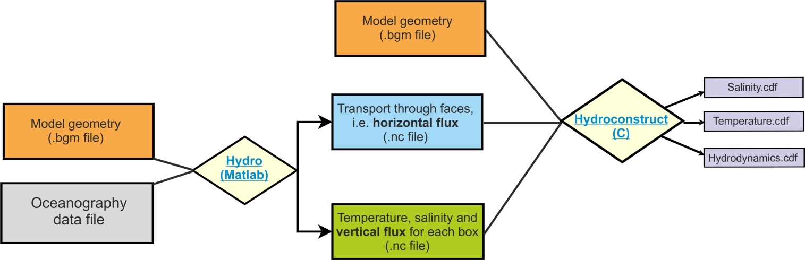
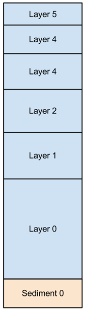

4. HYDRODYNAMIC, SALINITY AND TEMPERATURE FORCING DATA
4.1. General introduction to forcing of Atlantis models
Like most other ecosystem models, Atlantis does not calculate water fluxes (current, circulation) itself, but uses outputs from specialised oceanographic models such as ROMS (Regional Ocean Modeling System) (Shchepetkin and McWilliams 2005; Haidvogel et al. 2008), BLUELINK (Brassington et al. 2007) or HYCOM (Chassignet et al. 2006). In other words, Atlantis models are forced with hydrodynamic data from oceanographic models. At the minimum level Atlantis requires only a hydrodynamic forcing input file defining water fluxes across boxes and layers. The model will then use simple routines to calculate temperature and salinity conditions in each cell at each simulation time step. However, most Atlantis models, and other ecosystem models (Fiechter et al. 2014; Rose et al. 2015), also use oceanographic model output to force temperature and salinity conditions (and in some cases also oxygen, pH or other tracers). This is because oceanographic models are specialised to model temperature and salinity conditions, and their calculation of these parameters are deemed to be more accurate than those used in Atlantis. Moreover, taking the physical properties from the oceanographic model means they are consistent with the exchanges (currents) being read in from the oceanographic model. In rare cases, if oceanographic models are not available, water flux information can be pieced together from observations or literature to generate hydrodynamic forcing files manually. Table 5 lists some of the spatial domains and forcing characteristics of example model applications.
Oceanographic models simulate processes on their native grid, which is typically of much higher spatial resolution than Atlantis. The temporal scale in oceanographic models is also often in the range of seconds rather than the 6h, 12h or 24h used in Atlantis. Further, most oceanographic models use the same number of water column layers regardless of total depth (called sigma layers) (Fig. 6). This means that the depth of a layer in oceanographic models is very different in shallow and deep waters, while in Atlantis, water layer depths remain relatively stable (with small variations due to tides). This means that water fluxes and values of all forced parameters must be interpolated onto Atlantis model polygons and cells.
Table 5. Hydrodynamic structure of some example Atlantis models. Advect = advection, temp = temperature, salt = salinity.
| SE Australia | Eastern Tasmania | Port Phillip Bay | Western-port | NEUS | California current | Gulf of California | |
|---|---|---|---|---|---|---|---|
| Key oceanographic effects | Boundary currents | Boundary current, upwelling | River input and slow flushing | River input and flushing | Gulf Stream, Boundary current, Georges Bank | Boundary current, upwelling, El Nino | Colorado River input, tidal mixing / stratification |
| Number of boxes | 71 | 11 | 60 | 27 | 30 | 62 | 66 |
| Max number of water column layers | 5 | 6 | 1 | 1 | 4 | 7 | 6 |
| Ocean boundary depth | 2400m | 2400m | 45m | 30m | 200m | 1200m | 2025m |
| Hydrodynamic model used to supply flows | OFAM-Bluelink¹ | OFAM-Bluelink | 3D hyrdro model² | Empirically defined | HYCOM³ | ROMS⁴ | ROMS⁵ |
| Hydrodynamic time series length (years) | 10 | 10 | 5 | 1 | 1 | 7 | 23 |
| Transport model variables | Advect, temp, salt | Advect, temp, salt | Advect | Advect | Advect, temp, salt | Advect, temp, salt | Advect, temp, salt |
| Environmental drivers | Inshore sediment change, temp, pH, nutrients, river flow | Nutrients | Nutrients | Nutrients | Temp, nutrients | Temp, nutrients, river flow | |
| Climate change | Yes | No | No | No | No | Yes (impl.)⁶ | No |
| Explicit larval advection | No | No | No | No | No | No | Yes |
Notes: - ¹ Oke et al 2005 - ² Walker 1997a, 1997b - ³ hycom.rsmas.miami.edu/las/ - ⁴ ROMS Hermann – NOAA PMEL/JISAO, Seattle - ⁵ ROMS Pares-Sierra - Centro de Investigación Científica y de Educación Superior de Ensenada - ⁶ Implicit handling of climate change means that extra mortality terms (related to acidification) or forced changes (e.g. for temperature) are used rather than flows from down scaled global circulation models

Figure 6. An example of oceanographic sigma depth layers (grey lines) with an overlay of Atlantis spatial structure. Figure by Javier Porobic Garate
4.2. Transforming oceanographic model output into Atlantis forcing files
The interpolation of the oceanographic output into Atlantis forcing files requires transformation across different shaped grids and depth layers. Water fluxes must be transformed from the oceanographic grid to Atlantis faces, whereas temperature and salinity values must be averaged onto Atlantis cells and time steps. The transformation must also account for hyperdiffusion, which is caused by the different spatial scales of oceanographic and Atlantis models. Because concentration of tracers within a layer of a box is assumed to be uniform, a tracer that enters a box is instantaneously assumed to be equally distributed throughout the entire box. This means that flow of tracers in large boxes would be overstated by orders of magnitude if this hyperdifussion phenomenon is not taken into account. The (crude) correction simply divides the east-west water flows by the width of the box (in metres) in the east-west orientation and north-south flows by the width of the box in the north-south orientation. This is a simple and a standard approach to correct for hyperdifusion and can be further refined using the horiz_mix scalar in the BGM file.
Fortunately, the transformation of oceanographic files is increasingly streamlined. Until recently most model developers used two codes contributed by CSIRO. We will describe them in a more detail below. However, new codes are currently being developed by the Atlantis community, i.e. an R script by Cecilia Hansen to construct hydrodynamic files from ROMS files. Please check the Atlantis wiki forcing files page and Atlantis google group for any new developments in this area.
The interpolation of oceanographic data onto the Atlantis model geometry requires three main conversions (Fig. 7):
- Calculate horizontal water fluxes across Atlantis polygon faces, i.e. from one polygon to another
- Calculate vertical water fluxes within Atlantis polygons.
- Calculate state variables used for optional forcing, such as salinity and temperature for each cell and time step. For this step temperature and salinity values from high resolution oceanographic models are mapped onto Atlantis cells and a weighted average for each cell is calculated
These three steps constitute the main conversion and are conducted using the Hydro Matlab script (follow the link for further instructions on installation and use of the Hydro script and also check Hydro FAQ for more information). Hydro produces two NC files which are then used by Hydroconstruct to produce the final Atlantis forcing files. Hydroconstruct makes sure the order of water columns is in the right direction, transforms the water flux data into per layer per box fluxes and also corrects for hyperdifussion (using either area based scaling or area and box shape based scaling). The Hydroconstruct running page and parameter file provides further information on the script and how to run it.

Figure 7. Main steps in converting oceanographic files into Atlantis input files, as done using two CSIRO contributed scripts Hydro and Hydroconstruct. Figure by Javier Porobic Garate
Interpolation and interpretation of the oceanographic data is one of the main challenges for Atlantis models developers and users, because usually they are biologists and not oceanographers. It is therefore highly recommended to include an oceanographer in the Atlantis team, at least during the model development stage, but also if and when long term forcing of environmental trends is needed.
4.3. Things to keep in mind about hydrodynamic forcing files
Oceanographic modelling has made rapid progress in recent years and availability of high resolution data is increasing, but there are still a few issued that should be kept in mind:
- Absence of long term oceanographic data to study long term trends. Oceanographers rarely conduct 50+ years of high resolution simulations, yet such time frames are often needed for Atlantis simulations. The length of oceanographic data time series usually more on the order of 1 to 25 years (see Table 5 for examples) and a common practice among Atlantis users is to ‘loop’ over the available oceanographic input years. One should be aware that if long term trends are present in the oceanographic data, they will be seen as jumps in average variable values every time the file is recycled. Also, such recycling alone is not suitable for studying long term environmental trends. Ideally long term forcing files should be obtained directly from long term oceanographic simulations.
As a crude approximation, long term trends can be forced onto hydrodynamic files using an R script contributed by Hem Nalini Morzaria Luna and used for the Gulf of California model. Alternatively, trends in temperature, salinity and pH can be added in the biology.prm file using several Tchange, Schange and PHchange parameters (see below)
Insufficient resolution in coastal areas. Most oceanographic global and publicly available models do not include coastal areas at sufficiently high resolution (in many old models they are not represented at all). Yet this is where a lot of important processes of nutrient input, recycling, spawning and larval dispersal take place. It is therefore very important to assess the water fluxes in small or shallow coastal areas and make sure that they are sufficiently accurate (see below).
Loss of resolution to represent eddies and upwelling. Translating high resolution oceanographic models to the Atlantis polygons means that transformed forcing files may not capture the true magnitude of eddy strength or local upwelling, both of which are important for driving local productivity. To compensate for this loss of resolution it is recommended that local forcing of productivity be included using eddy parameters (see below) and/or forcing additional nutrient loading into coastal waters (to simulate upwelling; Brand et al. 2007).
Oceanographic models can include ‘drift’, temporal artefact trends that bias long-term oceanographic outputs. If ‘drift’ is seen to be a problem, modellers can choose a limited set of years of oceanographic output and loop these years.
Artificially inflated vertical fluxes. Sometimes oceanographic models can inflate the vertical fluxes (they are used for tuning the horizontal fluxes), which can lead to too much vertical mixing. This is becoming less of a problem as the skill of oceanographic models improves with time, but it is still recommended to check the intensity of vertical fluxes. If vertical fluxes appear to be too strong they can be downscaled using vertical diffusion and vertical mixing routines (see below) or by using an R script contributed by Raphael Girardin (details and a link will be added when available, but also check the wiki). Similat ‘jets’ can appear in horizontal fluxes (particularly in older models and most often close to the boundary of the oceanographic model domain).
Underestimated diffusion of tracers between boxes. In real world there are lots of bi-directional flows between spatial domains that are modelled as distinct Atlantis boxes. However, when these flows are converted into hydrodynamic forcing files, all flows are averaged for each pair of cells, so that only one-directional flow occurs between two cells at each time step. This might under-represent diffusion of tracers between boxes, especially if boxes are large and if averages all go in the same direction in all layers of the two boxes.
NOTE!
The hydrodynamic forcing files are automatically recycled or looped for the entire model simulation run. This is not the case with other forcing files, such as temperature, salinity or other optional forcing files. To rewind the temperature and salinity forcing files set the flags temp_rewind and salt_rewind to 1 in the force.prm file. If the flags are set to 0 then the simulations will use the last temperature and salinity value once the forcing file time series ends. To rewind any other optional forced tracers make sure you set TracerName_rewind (e.g. pH_rewind) parameter to 1.
NOTE!
The hydrodynamic forcing files are not necessarily the final water transport in your model. They provide the horizontal and vertical water fluxes, which are then used in the transport model described in the (transportBM) routine in the attransport.c file.
The transport model uses the water exchanges from the hydrodynamic forcing files, but can also:
- apply water flow corrections to isolated boxes according to specified parameters
- add local water inputs or sinks, such as river flows or outflows
- apply water exchanges through the surface layer due to precipitation and evaporation
The final flows of water are given in the output.nc file listed in hdsource, hdsink, eflux and vflux (see description of the ouput file parameters in chapter 5.6). If some of the optional physics routines are used, then these final exhcanges may be different from the hydrodynamic forcing inputs.
4.4. Numbering of vertical layers in the input and output NC files

Atlantis allows users to define several water column and sediment layers, although most applications have only one sediment layer.
Layer counting starts from the sediment-water interface.
The water layer 0 is always closest to the sediment, the next layer up is layer 1 and so on. Sediment layer 0 is closest to the water, the next layer down is 1 and so on.
In the.nc files water column layers are listed first, followed by the sediment layers.
layer 0, layer 1, layer 2, layer 3, layer 4, layer 5, sediment 0
In the model setup shown here, the layer corresponding to the water column’s surface layer can be anything from layer 0 to layer 5, depending on the total depth of a box. In deep boxes the surface layer will be layer 5, while for the shallowest boxes the surface will have layer 0 as their surface layer.
NOTE!
The ordering of layers in output files is opposite to that in the input file. This is a development legacy aimed to improve the viewing of output files with NC file viewers. This also means that the position of missing water column layers in arrays describing boxes with fewer than maximum layers is reversed between the input and output files.
In the input.nc file a shallow water box with three water layers will look like:
layer 0, layer 1, layer 2, 0, 0, 0, sediment 0
In the output.nc file the same box will look like:
0, 0, 0, layer 0, layer 1, layer 2, sediment 0
A good way to understand this is to look at temperature variables. Note that warmer water is on the surface.
| Input.nc file: | Output.nc file: |
|---|---|
| Temp = 15.75, 18.54, 18.55, 0, 0, 0, 11.85, 16.38, 17.64, 17.49, 0, 0, 0, 11.77, 15.66, 17.34, 17.31, 0, 0, 0, 11.57, 16.05, 16.92, 16.87, 0, 0, 0, 11.29, 5.15, 11.85, 13.92, 17.02, 19.01, 19.83, 0.32, 5.29, 11.91, 13.85, 16.39, 18.50, 19.48, 0.93, … |
Temp = 0, 0, 0, 15.75, 18.54, 18.55, 11.85, 0, 0, 0, 16.38, 17.64, 17.49, 11.77, 0, 0, 0, 15.66, 17.34, 17.31, 11.57, 0, 0, 0, 16.05, 16.92, 16.87, 11.29, 5.15, 11.85, 13.92, 17.02, 19.01, 19.83, 0.32, 5.29, 11.91, 13.85, 16.39, 18.50, 19.48, 0.93, … |
4.5. Viewing and checking forcing input files with R
An R-package shinyrAtlantis is available on https://github.com/shanearichards/shinyrAtlantis and provides a number of shiny applications to help with viewing Atlantis forcing and parameter files.
For exploring hydrodynamic forcing files the package provides a function ‘make.exchange.object' that reads in the BGM file containing box geometries and the NC file containing the exchanges. The function ’make.exchange.object’ also needs to be provided with the cumulative layer depths. It then produces a data object that can be fed into the shiny application ‘sh.exchange’. The ‘sh.exchange’ provides a visual description of the exchange data. It visualises connections and exchanges among boxes and layers and helps to identify if any boxes are isolated. A time-series of exchanges for each box can also be generated, as well as a two-dimensional visualisation of the horizontal flow throughout the domain. Development is under way to add visualisation of the salinity and temperature forcing files.
4.6. Light and noise pollution
A simple representation of noise and light pollution from human sources can be represented as a forcing file. More advanced code linking this pollution to levels of human activity is present in the development branch but not the trunk as yet. In the main trunk code, for now the levels of noise and light pollution must be entered in a forcing NC file in the same way as salinity or temperature.
To activate and load this pollution you need to
run.prm file: set flag_pollutant_impacts to 1
forcing.prm file: set use_pollutantfiles to 1 and then
nnoise_pollutionfiles X (where X is the number of noise forcing files)
Noise_Pollution0.name path/noise_filename.nc
noise_pollution_rewind 1 (set to 0 if you do not want the file(s) to be rewound and reused)
nlight_pollutionfiles X (where X is the number of light pollution forcing files)
Light_Pollution0.name path/light_pollution_filename.nc
light_pollution_rewind 1 (set to 0 if you do not want the file(s) to be rewound and reused)
- biology.prm file: Add the parameters noise_coefft_XX and light_coefft_XX for each biological group
- groups.csv: Add the columns isLightEffected and isNoiseEffected and set the value to 1 for these if you want noise/light pollution to affect that species group
For any groups that are affected then during movement an additional scalar (\(\delta_{\mathbb{N}}\)) is applied to each box (making a site less attractive to the species), with:
\(\delta_{\mathbb{N}} = \ \frac{\kappa_{\eta,s}}{\mathbb{N}_{i,j}}\)
Where \(\mathbb{N}_{i,j}\) represents the level of the pollutant (noise or light) in layer j of polygon (box) i; and κη,s is the coefficient for that pollutant type.
In addition, metabolic parameters – consumption (C) and growth rates (mum) – are scaled in the same way; while starvation and background (mL, mQ) mortality rates are scaled by the inverse.